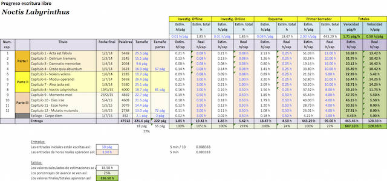
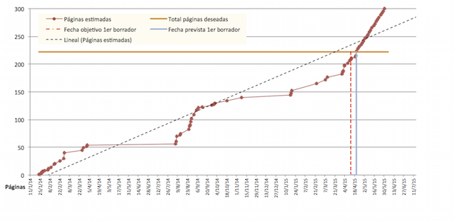

Cómo escribí: Noctis Labyrinthus
Table of Contents
Cómo escribí: Noctis Labyrinthus
Este pequeño blog es una especie de registro de cómo escribí Noctis Labyrinthus.
De momento los artículos de esta novísima sección están por escribir, pero he querido al menos incluir los títulos con una doble motivación: primero, dar a conocer al lector lo que iré incluyendo; y segundo, para que me sirvan a mí mismo de recordatorio de todo lo que quiero incluir. Como los artículos que aquí aparezcan lo harán ordenados siguiento un criterio de antigüedad creciente en cuanto a su contenido, así aparecen ahora los títulos de los artículos vacíos.
Mis primeros royalties
Me quedaba esta pequeña entrada para concluir la serie de mini-artículos que he dedicado al proceso de publicación de mi primera novela. No hay mucho que decir, realmente. Nada más que se siente una gran satisfacción al ingresar, un mes y medio después de las ventas, más o menos, del porcentaje correspondiente en calidad de royalties por tu trabajo. Es algo que en mi caso me ingresan automáticamente los de Amazon en mi cuenta.
Como nota curiosa, ahora que ha pasado algo más de un año desde la publicación de Noctis Labyrinthus, diré que con todos los ejemplares vendidos, en formato papel y electrónico, aún no he cubierto los costes del ISBN que tuve que solicitar para la novela impresa (ya que es obligatorio). Pero no es que mi porcentaje sea muy bajo… que lo es…
Es que he vendido muy pocos ejemplares…
Pero tampoco un gran volumen de ventas era el objetivo, ¿verdad?
Autopublicación
Mi libro, como la de decenas de miles de personas, ha sido autopublicado. ¿Qué quiere decir esto exactamente? En pocas palabras, que uno mismo se lo guisa y se lo come, y corre con todos los gastos de la publicación.
Tras estudiar mucho el tema, me quedó claro que la publicación por parte de una editorial de la primera novela de un autor novel es poco menos que un milagro. Dicho de otra manera: si se escribiese una novela acerca de ello, sería catalogada en el extremo duro de la Fantasía y Ciencia Ficción. Así que, francamente, no veo posibilidad de que un autor como yo vea su libro en la calle si no es mediante la autopublicación.
Una vez que has decidido autopublicarte, queda la duda de mediante qué plataforma. Esta decisión se ve afectada por la idea de querer tu libro en electrónico o en formato físico. En mi caso, tenía claro que deseaba un libro físico, si bien también me seducía la idea de ofrecerlo en electrónico. Para libros electrónicos me sugirieron el uso de la plataforma Kindle Direct Publishing (de Amazon). Sin embargo, era un poco reacio a limitarme al libro electrónico. Los libros electrónicos son fabulosos, espero que no me malinterprete el lector. Pero aún, lamentablemente, tienen un espíritu de intangibilidad que, siquiera psicológicamente, hace que se les vea como perecederos en el tiempo. Es fácil regalar a otra persona, a tu pareja, a tu hijo, un libro que para ti tiene cierto valor sentimental. No así con los libros electrónicos. Por qué no decirlo, una de las cosas que más ilusión me hacía era poder regalarles un ejemplar de mi libro a mis padres. (Curiosamente, mi madre se leyó el libro en formato electrónico; sobre todo debido a que, de esta manera, podía fijar el tamaño de la letra a uno más grande, mejorando así su lectura.) También resulta emocionante y tremendamente satisfactorio poder dedicar a mano uno de los ejemplares de tu libro a algún amigo. En definitiva, la autopublicación por medio de la plataforma KDP no cumplía todos mis requisitos.
Afortunadamente me enteré en seguida de que Amazon posee otra plataforma, esta sí para autopublicación de libros físicos: CreateSpace. Además, es posible ligar un título en formato físico en esta plataforma con el mismo título en formato electrónico isncrito en la plataforma KDP. Esto, junto a la sencillez con que uno puede darse de alta, así como la ventaja de que Amazon se ocupe de todos los trámites relativos a impuestos, pagos y cobros, etc., me hizo decantarme por el gigante de la publicación para mis libros.
Y realmente estoy bastante contento con la decisión.
Maquetando
La fase de maquetación es una de las más importantes. En realidad, todas son importantes. Lo que quiero decir es que la maquetación es fundamental para la consolidación de un buen producto como tal. Una mala novela, por muy buena maquetación y portada que posea, al final quedará relegada al olvido, por mucho que el atractivo de su portada o lo llamativo de su título atraiga al principio a un puñado de lectores que se puedan sentir atraídos y finalmente "piquen". Lamentablemente lo contrario no es cierto: una buena novela no sólo ha de serlo; también ha de parecerlo. Quiero decir con ello que una mala maquetación de una novela puede hacer desistir a muchos lectores de continuar su lectura hasta el final; puede producir esa especie de pereza lectora que hace que tras pasar unas pocas páginas te apetezca más cerrar el libro que seguir leyendo.
En mi caso, la maquetación, que también hice yo mismo, fue realmente fascinante. Primero, has de saber qué tamaño de libro (ancho por alto) deseas que tenga el producto final. En base a ello hay que determinar el tipo de fuente y el tamaño de letra más adecuado. Y aquí, como aficionado a la Tipografía, es donde me sentí inmerso en un mundo nuevo, donde conceptos como el kerning o las ligaduras, entre otros muchos, habían de ser tenidos en cuenta para que la lectura para el lector resultase confortable además de apasionante.
Navegué en numerosas webs donde se explicaban cuáles eran los parámetros más adecuados para determinar si una fuente tipográfica era o no adecuada para un libro impreso o electrónico, y me encontré con múltiples listas de fuentes preferidas por varios entendidos en el tema. Finalmente, para un libro de 203 x 127 mm (o de 8 x 5 pulgadas), me decanté por la fuente Garamond en tamaño 11pt.
En la maquetación, además, hay que tener en cuenta:
- dónde se desea que aparezcan los inicios de los capítulos (si en la página izquierda, derecha, o en cualquiera de ellas sin distinción),
- El tamaño de los títulos, subtítulos, citas, etc.,
- las páginas en blanco que se desea que aparezcan (por ejemplo, en mi caso hay una hoja en blanco antes de la hoja con el título, es decir dos páginas en blanco),
- dónde aparecerán los títulos, copyright, ISBN, etc.
- y, por supuesto, posibles secciones adicionales como agradecimientos, dedicatorias, prólogos, índices, etc.
Finalmente, hay que tener en cuenta que cuando se maqueta para un libro electrónico, hay muchas de estas cosas que pueden obviarse (como las hojas en blanco), y otras que han de ser adaptadas (como el tipo o tamaño de fuente, quizá).
En conjunto, me siento bastante satisfecho con el resultado de mi primera maquetación oficial. Veremos con las próximas…
La portada
Había visto que para autopublicarse uno mismo un libro (ahondaré en ello en un artículo posterior), además de contar con los servicios de publicación de alguna entidad o empresa, era necesario al menos realizar una maquetación de la obra, así como el diseño de una portada y contraportada. Todo esto podía a su vez ser subcontratado a terceros, o ser realizado por uno mismo. Y evidentemente, cualquiera que me conozca sabe que opté por esta segunda opción.
No quiero entrar en detalles acerca del diseño de la portada. Pero sí contaré una anécdota acerca del diseño final. Por diversas razones, que no vienen a cuento, el diseño final de la portada no era enteramente satisfactorio para mí. Era más o menos como había pensado, pero le faltaba algo. No tenía mucha idea de lo que era. Intenté meterle, con las típicas aplicaciones de corrección de imágenes, varias capas con luces, introducir algún tipo de textura, y cosas así. Nada. No conseguía lo que quería.
Tras un par de días sin tocar la portada (seguía trabajando en el texto del libro, que aún no estaba concluído del todo), se me ocurrió una cosa al llegar a casa. Ese día iba a estar solo por una hora o así, ya que no había salido tarde del trabajo, y quien iba a recoger a los niños al cole era mi mujer. Así que cogí un folio en blanco, y unas ceras de colores (creo que unos marrones, rojo, naranja, negro, y no sé si incluso azul o morado), y me puse a dibujar más o menos el paisaje que se ve en la portada, pero con trazos irregulares y a toda velocidad. No tardé en concluir mi obra ni cinco minutos. Tras observar que podía haber conseguido lo que perseguía, escaneé el folio, e incluí la imagen resultante como nueva capa en la imagen de la portada. La mezclé adecuadamente y voilá!/ Funcionó. La rugosidad del dibujo de las ceras hizo que la imagen de la portada adquiriese la textura irregular que yo deseaba. Apenas la toqué posteriormente.
Como comentario final, señalar que semanas después de la publicación, comenté varios temas acerca del libro con un amigo. Y me dijo que hacía tiempo, él había leído una serie de consejos para hacer una portada atractiva al público. Y que la mía cumplía con todos ellos. Aquello me puso realmente muy contento: aunque mi éxito editorial se quedase en un puñado de amigos, siempre podía decir que mi portada cumplía con ciertos criterios de éxito reconocidos.
Revisiones
Tras un período de vacaciones (cortas, como todas las vacaciones), continúo con mi relación abreviada de la experiencia de escribir "Noctis Labyrinthus".
Cuando quedaban un par de capítulos para el final, más o menos, pasé a revisión lo que llevaba escrito a un grupo de buenos amigos. Ya había pedido a mi hermana y mi mujer que perdiesen algo de su tiempo en leer los primeros capítulos de la novela, para que me contasen qué les parecía el cariz de la misma, el tempo, etc. En esas primeras revisiones les solicité que se olvidasen totalmente de correcciones gramaticales, de ortografía, etc., ya que con posterioridad se realizarían ese tipo de análisis en el texto en repetidas ocasiones. Y la aceptación fue bastante buena.
Como digo, cuando quedaba poco para el final pasé lo que llevaba escrito a unos amigos. Los comentarios fueron más que positivos, lo cuál me produjo una satisfacción increíble, como cualquiera puede suponer. Evidentemente también hubo comentarios críticos, y alguno negativo relativo a algún aspecto concreto o detalle del manuscrito. Pero era precisamente por ello que le había solicitado esta revisión a estas personas: porque sabía que si algo no les gustaba, me lo iban a decir. Y como esperaba, no me fallaron.
A continuación de la recepción de los comentarios, era habitual que casi cada día me preguntasen, medio en broma, medio en serio, que si había terminado ya. Me decían que estaban deseando que concluyese por fin el libro, para poder leerlo completamente. Y aquellas bromas, aquellas peticiones, ellos lo saben bien, se lo agradezco profundamente, porque me dieron la fuerza y el empujón que necesitaba al final para finalizarlo.
Se vislumbra el final
Por muy poco que se avance cada día, si continuamos poco a poco escribiendo una historia, lo natural es que en algún momento lleguemos al final. En efecto, a partir de cierto punto, ya podía saborear el final de mi novela.
En ese punto, sin embargo, me ocurrió algo curioso. Tenía ya en la cabeza cuál sería el final de la historia. Y sentí la necesidad de escribir el final. No fue por simple impaciencia, no. Era una manera de establecer un horizonte, de determinar claramente cual era el ámbito de desarrollo de lo que restaba de novela. Y, por qué no decirlo, una forma de evitar que la novela tomase las riendas de la historia: algo así como decirle "aquí mando yo".
A la postre, creo que me precipité ligeramente. El final, tras releerlo tranquilamente, creo que resulta ligeramente abrupto. Pero eso son lecciones aprendidas para el futuro.
En definitiva: en realidad, quien mandaba era la novela…
La historia manda
Una de las cosas más curiosas que me ha pasado mientras escribía mi novela ha sido descubrir que a partir de cierto momento en la redacción del primer borrador era la historia misma y no yo quien decidía el camino que el relato había de seguir. Era de lo más intrigante y a la vez apasionante: yo había decidido que en determinado momento la historia debía orientarse de determinada manera, pero al llegar ahí descubría que lo que la historia demandaba era desarrollarse por otro lado, analizar determinado hilo adyacente, o detenernos en ciertos aspectos que a priori pensaba que eran irrelevantes.
Había leído y escuchado hablar a algún escritor, incluso personajes ya consagrados, acerca de sus historias como de entes vivos, que tenían personalidad propia. No sé si dotarle de tal a la mía, pero lo que si es cierto es que he experimentado cierta resistencia a la hora de conducir el argumento por ciertos derroteros que yo deseaba, mientras que se apreciaba una mayor facilidad al continuar por otras vías, como si la novela misma te ayudase, te empujase a continuar por ahí.
Ha sido sorprendente y muy interesante.
Ritmo variable
Como puede haber deducido cualquiera que me conozca un poco, el objetivo de escribir todos los días unas 200 palabras pronto se reveló ciertamente utópico. Por un lado, había días que me ponía a escribir y de una tirada hacía 500 palabras, o incluso 1000. Eso es bueno. Pero otros días, por mucho que me sentase frente a mi Emacs, no había nada en mi cerebro que se inclinase hacia la redacción novelística. Y eso es malo.
Aún más: en ocasiones, durante días, semanas enteras, bien por cansancio, bien por distracción, o bien por no saber realmente cómo seguir, no era capaz ni siquiera de ponerme frente al texto que tenía entre manos. Y eso es peor.
En la figura donde muestro una gráfica realizada a partir de los datos registrados de progreso diario se puede apreciar perfectamente cómo el progreso se quedaba estancado durante días, semanas y a veces meses enteros.
El período más largo de inactividad, no obstante, coincidió con unas semanas de intensa actividad en lo laboral. Estabamos intentando desarrollar un compañero y yo lo que sería a la postre una semilla de un futuro producto para nuestra compañía. Ésta había sido una empresa orientada a proyectos. Pero en el nuevo mercado en el que se movía la tendencia era a la utilización de productos ya consolidados, ajustados a las necesidades de cada cliente. Bien, ese no era nuestro caso, al menos en el ámbito en el que mi departamento se movía. Y mi jefe por aquel entonces, amigo mío de toda la vida por cierto, y yo mismo, habíamos identificado una ventana de oportunidad clarísima, y un retorno de inversión para el desarrollo de un nuevo producto bastante prometedor. La alta dirección de la compañía carecía de la visión necesaria en aquel entonces para valorar esta opción, por lo que nos lanzamos un compañero y yo (apoyados de cerca por mi jefe directo) a la creación de un prototipo funcional, una prueba de concepto, con el fin de demostrar a nuestra dirección que lo que decíamos tenía fundamento. Este período de excitación a nivel laboral conllevó un parón en la redacción del primer borrador de mi novela.
(¿Que cómo terminó la historia? Terminó con la declaración de "proyecto de máxima prioridad" de nuestra semilla de producto, pero la asignación de un total de cero personas y cero horas para el desarrollo del producto, por lo que en la práctica ello significó que nada de lo diseñado por mí y mi colega se llevó a la práctica; se perdió la ventana de oportunidad, y yo tuve la gran suerte de poder abandonar la compañia por un puesto en el Centro Europeo de Astronomía Espacial de la Agencia Espacial Europea.)
Seguimiento del progreso del libro
En un artículo anterior mencioné que establecí un número de páginas objetivo para el conjunto de la novela. Pues bien, para monitorizar el progreso del libro, posteriormente convertí este número de páginas en número mínimo de palabras; para ello estudié el número de palabras por página con diferentes tipografías y tamaños de letra, y escogí un valor promedio. Con ello, llegué al objetivo final de un número mínimo de palabras para mi novela.
La idea de utilizar el número de palabras para controlar el avance de la novela se basaba en dos premisas: la primera, que seguramente no conseguiría escribir todos los días (por falta de tiempo, de ganas, de energías, etc.); la segunda, que aunque era probable que muchas veces me pusiera a escribir y completase un gran número de páginas, había de establecer una cantidad mínima que me animase a escribir siquiera ese poco. Pensé que el mínimo sería un par de párrafos o así, así que establecí de nuevo ese límite de manera arbitraria en unas 200 palabras. Es decir, mi intención era forzarme a escribir todos los días al menos 200 palabras. Y dado que el límite quedaba establecido en un determinado número de palabras, parecía natural establecer ese control del progreso en palabras. Posteriormente podría convertir más o menos el número de palabras a número de paginas, e incluso a número estimado de capítulos.
He de reconocer que ls idea de llevar un control del progreso de mi libro la adopte tras leer un artículo en uno de mis blogs favoritos, NOOP.nl, de Jurgen Appelo. El artículo, "How I track progress on my book", de 2009, trataba de cómo el autor llevaba un control del progreso de su libro (un libro sobre management, muy bueno por cierto, de más de 300 páginas). Cuando lo lei me encantó, y en esencia seguí su método, con ligeras variaciones. En la imagen siguiente puede verse el aspecto de la tabla que he utilizado para controlar el progreso de mi libro.

Figure 1: Tabla de seguimiento de la extensión de cada capítulo
Como complemento a esta tabla, cada día que escribía registraba la cantidad de palabras que llevaba. De esta manera en poco tiempo pude comenzar a realizar estimaciones acerca de mi progreso futuro, y comparar esas estimaciones con la fecha deseada de conclusión. En la siguiente figura se aprecia un diagrama con los datos registrados durante la escritura del libro, y una proyección de los mismos para la estimación de la fecha de finalización.

Figure 2: Gráfica con los datos de progreso diario
Estructura de la novela
Cuando me decidí a escribir la novela que más o menos tenía en la cabeza, lo primero que me planteé fue: ¿existe alguna manera de estructurar la novela de manera que resulte más atractiva?
Tras investigar un poco (y hay que recordar que en esto de escribir soy un verdadero ignorante), descubrí que no hay una única manera. Lo sospechaba. De hecho, hay muchas maneras, y aquello me complicaba un poco la vida.
Sin embargo, en un par de lugares leí que una manera de mantener la atención del lector es estructurar la novela en secciones o partes, y sincronizar los momentos de crisis de la novela con los finales de cada sección. De esta manera se estimula al lector a continuar leyendo, de manera que pueda descubrir la forma en que se resuelve cada crisis.
Antes de continuar, necesitaba definir un objetivo para la extensión de la novela. Sí, lo sé, quizá no es lo más ortodoxo. Algunos me diréis que la novela es algo vivo, que ella misma define si aún queda relato o no. Y tenéis razón. Pero me conozco, y necesitaba un objetivo definido y cuantificable. De hecho, el reo que había establecido interiormente durante las navidades de 2013 fue del estilo de "escribir con una de las historias que tengo en la cabeza una novela de al menos X páginas". De manera que establecí un número de páginas mínimo, de manera absolutamente arbitraria.
Una vez establecido un número de páginas objetivo, calculé cuántos capítulos podría introducir, a partir de un número medio aproximado de páginas por capítulo. Mi idea era hacer los capítulos relativamente cortos. De esta forma establecí un número de capítulos aproximado a priori de entre 11 y 12.
A continuación, estudié la manera de encajar las diferentes etapas de la novela en cada capítulo, intentando cuadrar los momentos de mayor climax como antesala de cada sección.
A los lectores resta juzgar si el resultado de tantas cuentas valió la pena.
¡He publicado una novela!
Hace unos dos meses desde que publiqué mi primera novela. Llevaba mucho tiempo rumiándola. La verdad es que tenía tres o cuatro ideas, y al final desarrollé una de ellas.
Hace tres años más o menos intenté empezar a escribir algo, como propósito de Año Nuevo. Y como corresponde a la tradición, lo abandoné antes siquiera de empezar. Al año siguiente ni me lo planteé. No, no es que abandonase la idea. Era simplemente una… replanificación estratégica.
El año pasado, sin embargo, me propuse firmemente afrontar la tarea que seguía teniendo ahi, en la parte posterior del cerebelo, picándome constantemente como un gusanito fastidioso. Aquella voluntad se vio reforzada por la escasa motivación que me acompañaba en mis tareas profesionales… pero esto es harina de otro costal; mejor será tratar en otro lado este tema de la motivación.
Así que establecí un pequeño esquema de trabajo, una planificación y un método de monitorización de mi progreso (en los siguientes artículos explicaré brevemente cada de estos elementos), y me puse manos a la obra.